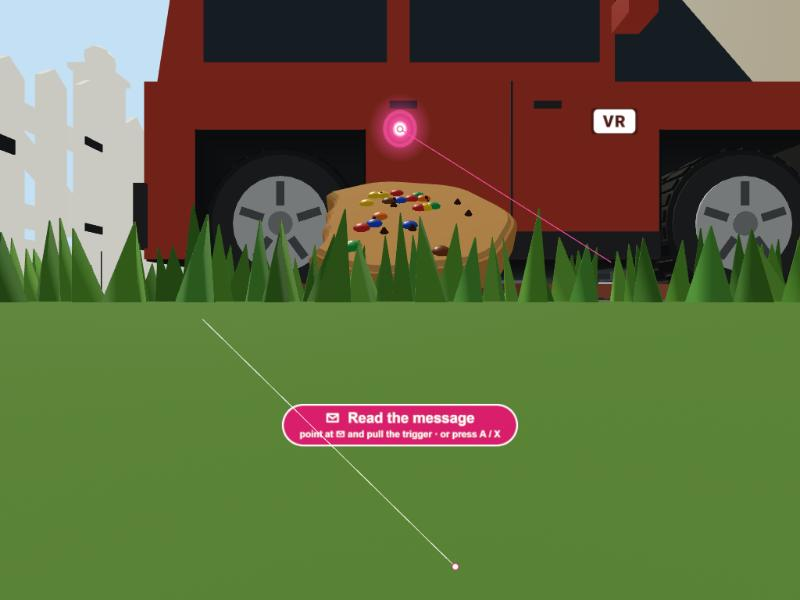
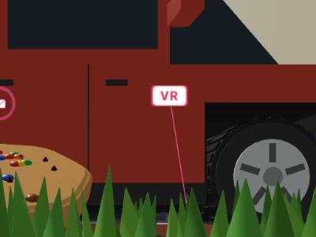

Exit 버튼 결과: 시야 오른쪽 위 · Enter VR 버튼과 같은 모양 (컴퓨터에서 헤드셋 모드를 흉내 내 찍은 화면)

평소 — 오른쪽 위에 반투명 검정 바탕 + 흰 VR 표시 (Enter VR 버튼과 같은 모양·색). 고개를 돌려도 늘 그 자리

선이 닿으면 — Enter VR에 마우스를 올렸을 때처럼 분홍(#ef2d5e)으로 바뀜. 방아쇠 → 헤드셋 모드 끝
· 확인: 버튼 색(평소 검정 35%, 닿으면 #ef2d5e), 방아쇠로 나가기 호출, 오른쪽 아래 옛 "Exit VR" 버튼 없음. 나머지(선, 카드 줌, 30° 돌기, 속도)는 그대로
· 자리: 시야 가운데에서 오른쪽 약 31°, 위로 약 27°. 더 구석으로 보내면 렌즈 가장자리라 흐려 보일 수 있어 여기에 둠. Quest에서 써 보고 더 옮길 수 있음 (숫자 하나) · 아직 실제 Quest에서는 확인 못 함